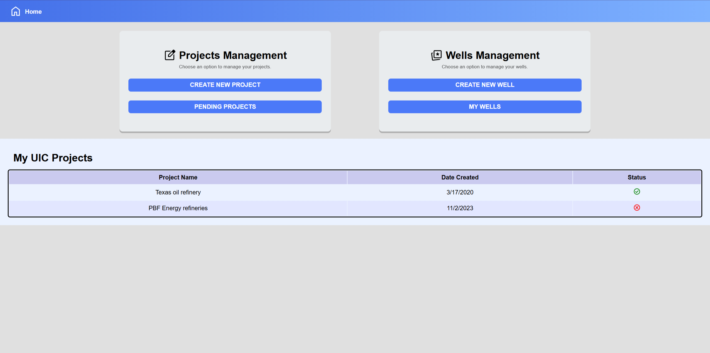
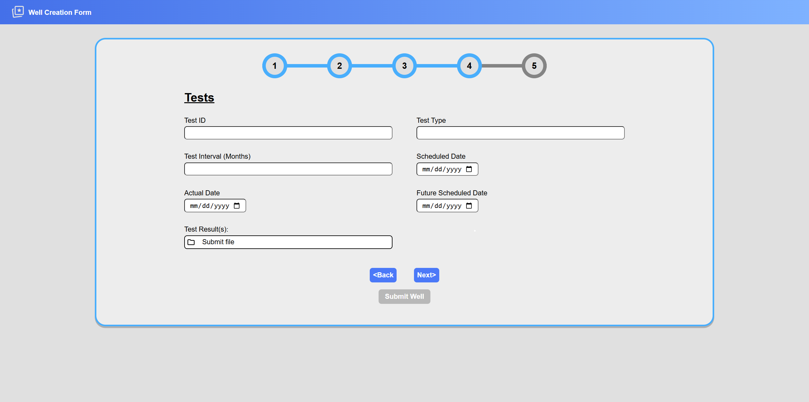
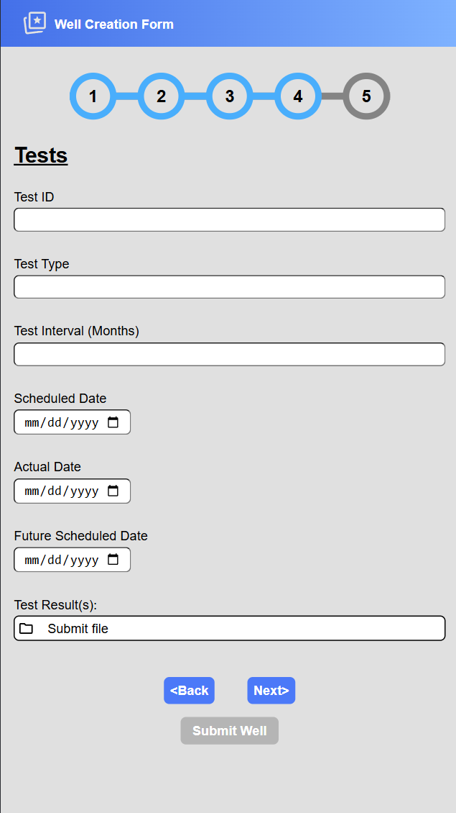

My work Experience
In terms of previous job experience, I have worked as a frontend web developer for the science division of California State University. As a small team consisting of 3 people, we were tasked to design and develop a website that an oil prospector would use to legally stake their claim to land that would be used to construct oil refineries.
In this position, I primarily worked as the frontend developer and one of the key communicators when it came to discussing our client’s wants and needs. In large part, my job was to communicate with a client who lacked programming knowledge and translate their requests into technical solutions that fit their criteria.



I had designed a professional looking user interface using the specifications provided to us by our client. Thanks to this position, it ended up being a major learning process for me. The 3 key skills I gained were:
1. Learning to work as a team while managing the scope of the project.
2. Working in an Agile development environment where we had to constantly adapt to shifting priorities.
3. Gained experience partaking in a client-facing project; Asking clarifying questions was key to ensure there was no miscommunication.